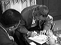
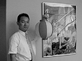
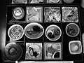
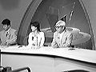

97.7.8（火）広島 松山
9時からホテルにて、広島ホームテレビ「花本マサミようこそ広島へ」収録。まず、鈴木プロデューサーが取材を受け、次に監督が取材を受ける。お土産に鈴木プロデューサーは地元の名酒を、宮崎監督は「冬虫夏草」をもらう。

自分のサインをする鈴木プロデューサー 番組収録の1場面収録後、少し時間があったので喫茶店へ行く。米沢さんが、宮崎監督から注文を受けていた「ツール・ド・信州」の提灯の見本を見せる。監督は「これでいいじゃないですか」と満足そう。

「ツール・ド・信州」のための提灯、場所はスタジオ内です松山に行くため、宇品港へタクシーで向かう。宇品港で前田さんとはお別れ。船の中で、TVを見ていたら、突然NHKのクラシックアワーで米良さんが歌っているのに気づく。みんなで見るも5分ぐらいで終わってしまった。残念。
松山観光港にて、「プレジデント」の記者2人と合流。2日間の密着取材を行うらしい。黒塗りのハイヤーが2台迎えに来ていて、そのまま料亭「花ぜん」へ。松山の映画館の関係者と一緒に食事。豪華な昼食だった。食事の時は、場所が四国だけに「お遍路」の話でひとしきり盛り上がる。

松山での豪華な食事愛媛新聞に移動、取材。
テレビ愛媛「とにかく愛媛500」収録。
次の取材まで、時間があったので宮崎監督、鈴木プロデューサー、伴田さんは揃って松山城まで散歩。リフトに乗って、お城の天守閣に登る。近くのお店で宮崎監督はところてん、鈴木プロデューサー、伴田さんはソフトクリームを食べてちょっと休憩。今まで、車での移動ばかりで歩くことがあまりなかった監督は「歩けていい汗がかけた」と喜んでいた。
南海放送で共同取材及び「ニュースプラス1」生出演。ディダラボッチはたぶん共同取材に登場。「ニュースプラス1」ではアナウンサーに「松山を舞台にした映画を作ってください。」と言われ「松山は海も山も街も全部揃っていて、映画の舞台としていいですね。」と監督。それを聞いたアナウンサーはすっかり乗り気、是非是非とせまられ、監督はタジタジ。

「ニュースプラス1」生出演この後、米沢さんはみんなと別れ、最終の飛行機で東京に戻るために一人松山空港へ向かう。空港にて同じく最終の飛行機で松山にやって来た、電通の曽我さんと出会う。10秒ほどの束の間の再会だったらしい。「頑張ってきます」と曽我さんは道後の街へ向かって行った……
空港で米沢さん、曽我さんが感動の再会を果たしている頃、宮崎監督一行は、例の場所で盛り上がっていた。監督フィーバー、伴田さんなんと4回フィーバー。鈴木プロデューサーはフィーバーかからず、相変わらずダメ。不調が続きます。
夕食は、最近ずっと和食が続いているのでお肉にしよう、ととんかつのお店へ。しかし、鈴木プロデューサー、伴田さんは牛を食べる。
宿泊先の道後プリンスホテルにて温泉に入り、ゆっくり休む。
しかし、夜中の1時、伴田さん、東宝の矢部さん、電通曽我さん、「孫くん」こと豊田さんの４人は、「お腹がすいた」とホテルの向かいのラーメン屋に行く。ラーメンだけのつもりが、生ビール、ラーメン、チャーハンとしっかりと食べることに。曽我さんはダイエット中らしく「俺は絶対汁は飲まない」と叫んでいたとか。伴田さんがチャーハンをラーメンの汁でかっこんでいると「異常だ」の一言。
| 次のページへ |
| はじめのページに戻る |
| 「もののけ姫」トップページへ戻る |